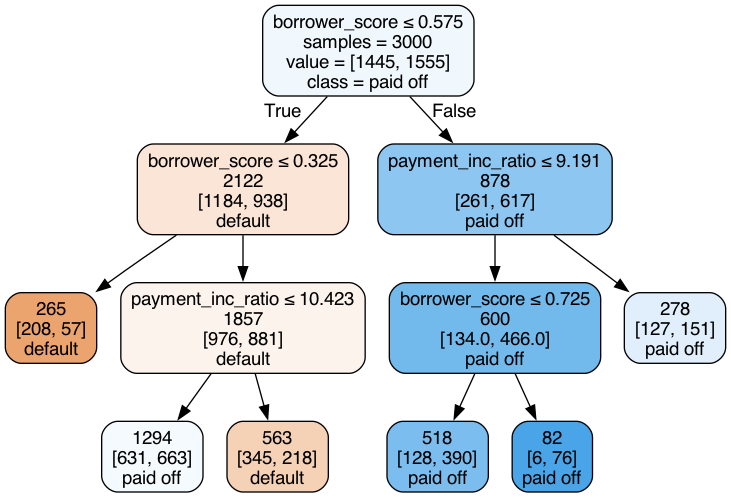
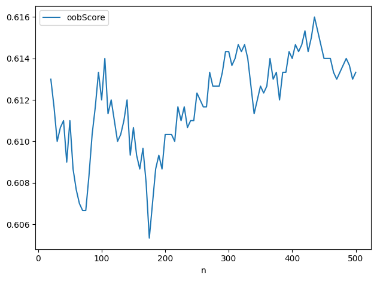
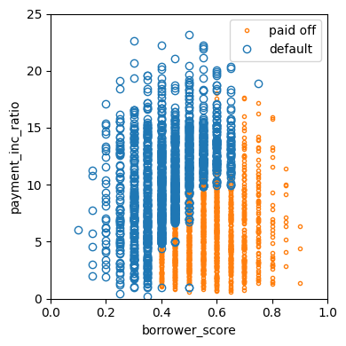
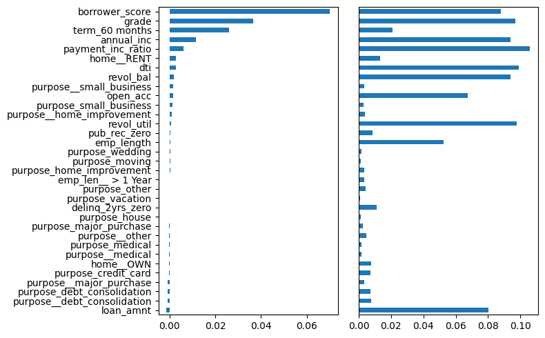
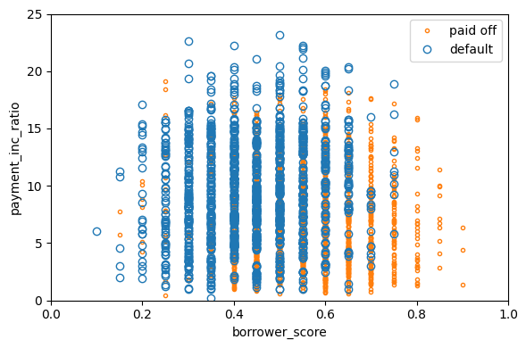
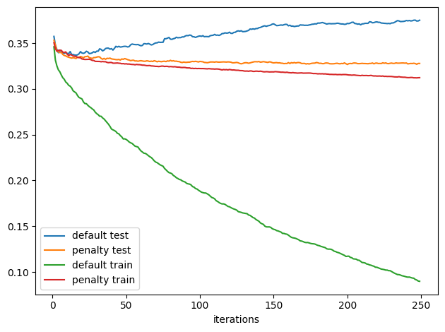
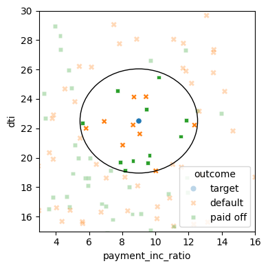
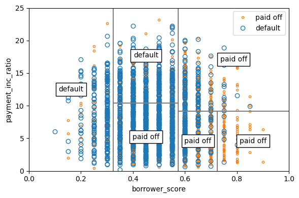
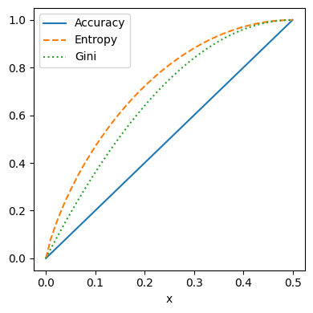

from collections import defaultdict
from itertools import product
from matplotlib.patches import Ellipse
from mlba import plotDecisionTree
from mlba import textDecisionTree
from sklearn import metrics
from sklearn import preprocessing
from sklearn.ensemble import RandomForestClassifier
from sklearn.model_selection import train_test_split
from sklearn.neighbors import KNeighborsClassifier
from sklearn.tree import DecisionTreeClassifier
from xgboost import XGBClassifier
import math
import matplotlib.pyplot as plt
import numpy as np
import pandas as pd
import random
import seaborn as sns
random.seed(123)
# Location of the data files. Adjust this path if you keep the data
# files in a different directory.
from pathlib import Path
DATA_DIR = Path('../../data')Chapter 6: Statistical Machine Learning
- 2019-2026 Peter C. Bruce, Andrew Bruce, Peter Gedeck
Statistical Machine Learning
K-Nearest Neighbors
A Small Example: Predicting Loan Default
loan200 = pd.read_csv(DATA_DIR / "loan200.csv")
predictors = ["payment_inc_ratio", "dti"]
outcome = "outcome"
newloan = loan200.loc[0:0, predictors]
X = loan200.loc[1:, predictors]
y = loan200.loc[1:, outcome]
knn = KNeighborsClassifier(n_neighbors=20)
knn.fit(X, y)
knn.predict(newloan)array(['paid off'], dtype=object)Standardization (Normalization, z-Scores)
loan_data = pd.read_csv(DATA_DIR / "loan_data.csv.gz")
predictors = ["payment_inc_ratio", "dti", "revol_bal", "revol_util"]
outcome = "outcome"
newloan = loan_data.loc[0:0, predictors]
X = loan_data.loc[1:, predictors]
y = loan_data.loc[1:, outcome]
knn = KNeighborsClassifier(n_neighbors=5)
knn.fit(X, y)
nbrs = knn.kneighbors(newloan)
X.iloc[nbrs[1][0], :]| payment_inc_ratio | dti | revol_bal | revol_util | |
|---|---|---|---|---|
| 35536 | 1.47212 | 1.46 | 1686 | 10.0 |
| 33651 | 3.38178 | 6.37 | 1688 | 8.4 |
| 25863 | 2.36303 | 1.39 | 1691 | 3.5 |
| 42953 | 1.28160 | 7.14 | 1684 | 3.9 |
| 43599 | 4.12244 | 8.98 | 1684 | 7.2 |
newloan = loan_data.loc[0:0, predictors]
X = loan_data.loc[1:, predictors]
y = loan_data.loc[1:, outcome]
scaler = preprocessing.StandardScaler()
scaler.fit(X * 1.0)
X_std = scaler.transform(X * 1.0)
newloan_std = scaler.transform(newloan * 1.0)
knn = KNeighborsClassifier(n_neighbors=5)
knn.fit(X_std, y)
nbrs = knn.kneighbors(newloan_std)
X.iloc[nbrs[1][0], :]| payment_inc_ratio | dti | revol_bal | revol_util | |
|---|---|---|---|---|
| 2080 | 2.61091 | 1.03 | 1218 | 9.7 |
| 1438 | 2.34343 | 0.51 | 278 | 9.9 |
| 30215 | 2.71200 | 1.34 | 1075 | 8.5 |
| 28542 | 2.39760 | 0.74 | 2917 | 7.4 |
| 44737 | 2.34309 | 1.37 | 488 | 7.2 |
KNN as a Feature Engine
predictors = ["dti", "revol_bal", "revol_util", "open_acc",
"delinq_2yrs_zero", "pub_rec_zero"]
outcome = "outcome"
X = loan_data[predictors]
y = loan_data[outcome]
knn = KNeighborsClassifier(n_neighbors=20)
knn.fit(X, y)
loan_data["borrower_score"] = knn.predict_proba(X)[:, 1]
loan_data["borrower_score"].describe()count 45342.000000
mean 0.498901
std 0.128735
min 0.050000
25% 0.400000
50% 0.500000
75% 0.600000
max 1.000000
Name: borrower_score, dtype: float64Tree Models
A Simple Example
loan3000 = pd.read_csv(DATA_DIR / "loan3000.csv")
predictors = ["borrower_score", "payment_inc_ratio"]
outcome = "outcome"
X = loan3000[predictors]
y = loan3000[outcome]
loan_tree = DecisionTreeClassifier(random_state=1, criterion="entropy",
min_impurity_decrease=0.003)
loan_tree.fit(X, y)
plotDecisionTree(loan_tree, feature_names=predictors,
class_names=loan_tree.classes_)
print(textDecisionTree(loan_tree))node=0 test node: go to node 1 if 0 <= 0.5750000178813934 else to node 6
node=1 test node: go to node 2 if 0 <= 0.32500000298023224 else to node 3
node=2 leaf node: [[np.float64(0.785), np.float64(0.215)]]
node=3 test node: go to node 4 if 1 <= 10.42264986038208 else to node 5
node=4 leaf node: [[np.float64(0.488), np.float64(0.512)]]
node=5 leaf node: [[np.float64(0.613), np.float64(0.387)]]
node=6 test node: go to node 7 if 1 <= 9.19082498550415 else to node 10
node=7 test node: go to node 8 if 0 <= 0.7249999940395355 else to node 9
node=8 leaf node: [[np.float64(0.247), np.float64(0.753)]]
node=9 leaf node: [[np.float64(0.073), np.float64(0.927)]]
node=10 leaf node: [[np.float64(0.457), np.float64(0.543)]]Bagging and the Random Forest
Random Forest
predictors = ["borrower_score", "payment_inc_ratio"]
outcome = "outcome"
X = loan3000[predictors]
y = loan3000[outcome]
rf = RandomForestClassifier(n_estimators=500, random_state=1, oob_score=True,
n_jobs=4)
rf.fit(X, y)RandomForestClassifier(n_estimators=500, n_jobs=4, oob_score=True,
random_state=1)In a Jupyter environment, please rerun this cell to show the HTML representation or trust the notebook. On GitHub, the HTML representation is unable to render, please try loading this page with nbviewer.org.
Parameters
n_estimator = list(range(20, 505, 5))
oob_scores = []
for n in n_estimator:
rf = RandomForestClassifier(n_estimators=n, criterion="entropy", n_jobs=4,
max_depth=5, random_state=1, oob_score=True)
rf.fit(X, y)
oob_scores.append(rf.oob_score_)
df = pd.DataFrame({"n": n_estimator, "oobScore": oob_scores})
df.plot(x="n", y="oobScore")
plt.tight_layout()
plt.show()
predictions = X.copy()
predictions["prediction"] = rf.predict(X)
predictions.head()
fig, ax = plt.subplots(figsize=(4, 4))
predictions.loc[predictions.prediction == "paid off"].plot(
x="borrower_score", y="payment_inc_ratio", style=".",
markerfacecolor="none", markeredgecolor="C1", ax=ax)
predictions.loc[predictions.prediction == "default"].plot(
x="borrower_score", y="payment_inc_ratio", style="o",
markerfacecolor="none", markeredgecolor="C0", ax=ax)
ax.legend(["paid off", "default"])
ax.set_xlim(0, 1)
ax.set_ylim(0, 25)
ax.set_xlabel("borrower_score")
ax.set_ylabel("payment_inc_ratio")
plt.tight_layout()
plt.show()
Variable Importance
predictors = ["loan_amnt", "term", "annual_inc", "dti", "payment_inc_ratio",
"revol_bal", "revol_util", "purpose", "delinq_2yrs_zero",
"pub_rec_zero", "open_acc", "grade", "emp_length", "purpose_",
"home_", "emp_len_", "borrower_score"]
outcome = "outcome"
X = pd.get_dummies(loan_data[predictors], drop_first=True)
y = loan_data[outcome]
rf_all = RandomForestClassifier(n_estimators=500, random_state=1, n_jobs=4)
rf_all.fit(X, y)RandomForestClassifier(n_estimators=500, n_jobs=4, random_state=1)In a Jupyter environment, please rerun this cell to show the HTML representation or trust the notebook.
On GitHub, the HTML representation is unable to render, please try loading this page with nbviewer.org.
Parameters
importances = rf_all.feature_importances_rng = np.random.default_rng(seed=321)
rf = RandomForestClassifier(n_estimators=500, n_jobs=4)
scores = defaultdict(list)
# cross-validate the scores on a number of different random splits of the data
for _ in range(3):
train_x, valid_X, train_y, valid_y = train_test_split(X, y, test_size=0.3)
rf.fit(train_x, train_y)
acc = metrics.accuracy_score(valid_y, rf.predict(valid_X))
for column in X.columns:
X_t = valid_X.copy()
X_t[column] = rng.permutation(X_t[column].values)
shuff_acc = metrics.accuracy_score(valid_y, rf.predict(X_t))
scores[column].append((acc - shuff_acc) / acc)df = pd.DataFrame({
"feature": X.columns,
"Accuracy decrease": [np.mean(scores[column]) for column in X.columns],
"Gini decrease": rf_all.feature_importances_,
})
df = df.sort_values("Accuracy decrease")
fig, axes = plt.subplots(ncols=2, figsize=(8, 5))
ax = df.plot(kind="barh", x="feature", y="Accuracy decrease",
legend=False, ax=axes[0])
ax.set_ylabel("")
ax = df.plot(kind="barh", x="feature", y="Gini decrease",
legend=False, ax=axes[1])
ax.set_ylabel("")
ax.get_yaxis().set_visible(False)
plt.tight_layout()
plt.show()
Boosting
XGBoost
predictors = ["borrower_score", "payment_inc_ratio"]
outcome = "outcome"
X = loan3000[predictors]
y = loan3000[outcome]
y = pd.Series([1 if o == "default" else 0 for o in loan3000[outcome]])
xgb = XGBClassifier(objective="binary:logistic", subsample=0.63)
xgb.fit(X, y)XGBClassifier(base_score=None, booster=None, callbacks=None,
colsample_bylevel=None, colsample_bynode=None,
colsample_bytree=None, device=None, early_stopping_rounds=None,
enable_categorical=False, eval_metric=None, feature_types=None,
feature_weights=None, gamma=None, grow_policy=None,
importance_type=None, interaction_constraints=None,
learning_rate=None, max_bin=None, max_cat_threshold=None,
max_cat_to_onehot=None, max_delta_step=None, max_depth=None,
max_leaves=None, min_child_weight=None, missing=nan,
monotone_constraints=None, multi_strategy=None, n_estimators=None,
n_jobs=None, num_parallel_tree=None, ...)In a Jupyter environment, please rerun this cell to show the HTML representation or trust the notebook. On GitHub, the HTML representation is unable to render, please try loading this page with nbviewer.org.
Parameters
xgb_df = X.copy()
xgb_df["prediction"] = ["default" if p == 1 else "paid off"
for p in xgb.predict(X)]
xgb_df["prob_default"] = xgb.predict_proba(X)[:, 0]
fig, ax = plt.subplots(figsize=(6, 4))
xgb_df.loc[xgb_df.prediction == "paid off"].plot(
x="borrower_score", y="payment_inc_ratio", style=".",
markerfacecolor="none", markeredgecolor="C1", ax=ax)
xgb_df.loc[xgb_df.prediction == "default"].plot(
x="borrower_score", y="payment_inc_ratio", style="o",
markerfacecolor="none", markeredgecolor="C0", ax=ax)
ax.legend(["paid off", "default"])
ax.set_xlim(0, 1)
ax.set_ylim(0, 25)
ax.set_xlabel("borrower_score")
ax.set_ylabel("payment_inc_ratio")
plt.tight_layout()
plt.show()
Regularization: Avoiding Overfitting
predictors = ["loan_amnt", "term", "annual_inc", "dti", "payment_inc_ratio",
"revol_bal", "revol_util", "purpose", "delinq_2yrs_zero",
"pub_rec_zero", "open_acc", "grade", "emp_length", "purpose_",
"home_", "emp_len_", "borrower_score"]
outcome = "outcome"
X = pd.get_dummies(loan_data[predictors], drop_first=True)
y = pd.Series([1 if o == "default" else 0 for o in loan_data[outcome]])
train_x, valid_X, train_y, valid_y = train_test_split(X, y, test_size=10000)
xgb_default = XGBClassifier(objective="binary:logistic", n_estimators=250,
max_depth=6, reg_lambda=0, learning_rate=0.3,
subsample=1)
xgb_default.fit(train_x, train_y)
pred_default = xgb_default.predict_proba(valid_X)[:, 1]
error_default = abs(valid_y - pred_default) > 0.5
print("default: ", np.mean(error_default))default: 0.364xgb_penalty = XGBClassifier(objective="binary:logistic", n_estimators=250,
max_depth=6, reg_lambda=1000, learning_rate=0.1,
subsample=0.63)
xgb_penalty.fit(train_x, train_y)
pred_penalty = xgb_penalty.predict_proba(valid_X)[:, 1]
error_penalty = abs(valid_y - pred_penalty) > 0.5
print("penalty: ", np.mean(error_penalty))penalty: 0.3274results = []
for ntree_limit in range(1, 250):
iteration_range = [1, ntree_limit + 1]
train_default = xgb_default.predict_proba(train_x,
iteration_range=iteration_range)[:, 1]
train_penalty = xgb_penalty.predict_proba(train_x,
iteration_range=iteration_range)[:, 1]
pred_default = xgb_default.predict_proba(valid_X,
iteration_range=iteration_range)[:, 1]
pred_penalty = xgb_penalty.predict_proba(valid_X,
iteration_range=iteration_range)[:, 1]
results.append({
"iterations": ntree_limit,
"default train": np.mean(abs(train_y - train_default) > 0.5),
"penalty train": np.mean(abs(train_y - train_penalty) > 0.5),
"default test": np.mean(abs(valid_y - pred_default) > 0.5),
"penalty test": np.mean(abs(valid_y - pred_penalty) > 0.5),
})
results = pd.DataFrame(results)
results.head()| iterations | default train | penalty train | default test | penalty test | |
|---|---|---|---|---|---|
| 0 | 1 | 0.345962 | 0.350490 | 0.3573 | 0.3531 |
| 1 | 2 | 0.331306 | 0.343755 | 0.3477 | 0.3479 |
| 2 | 3 | 0.325081 | 0.341124 | 0.3431 | 0.3415 |
| 3 | 4 | 0.320836 | 0.342199 | 0.3395 | 0.3404 |
| 4 | 5 | 0.318686 | 0.342058 | 0.3424 | 0.3396 |
ax = results.plot(x="iterations", y="default test")
results.plot(x="iterations", y="penalty test", ax=ax)
results.plot(x="iterations", y="default train", ax=ax)
results.plot(x="iterations", y="penalty train", ax=ax)
plt.tight_layout()
plt.show()
Hyperparameters and Cross-Validation
rng = np.random.default_rng(seed=321)
idx = rng.choice(range(5), size=len(X), replace=True)
error = []
for eta, max_depth in product([0.1, 0.5, 0.9], [3, 6, 9]):
xgb = XGBClassifier(objective="binary:logistic", n_estimators=250,
max_depth=max_depth, learning_rate=eta)
cv_error = []
for k in range(5):
fold_idx = idx == k
train_x = X.loc[~fold_idx]; train_y = y[~fold_idx]
valid_X = X.loc[fold_idx]; valid_y = y[fold_idx]
xgb.fit(train_x, train_y)
pred = xgb.predict_proba(valid_X)[:, 1]
cv_error.append(np.mean(abs(valid_y - pred) > 0.5))
error.append({
"eta": eta,
"max_depth": max_depth,
"avg_error": np.mean(cv_error),
})
print(error[-1])
errors = pd.DataFrame(error)
table = errors.pivot_table(index="eta", columns="max_depth", values="avg_error")
print(table * 100){'eta': 0.1, 'max_depth': 3, 'avg_error': np.float64(0.32901685739015657)}
{'eta': 0.1, 'max_depth': 6, 'avg_error': np.float64(0.33584569147367743)}
{'eta': 0.1, 'max_depth': 9, 'avg_error': np.float64(0.3465400449213362)}
{'eta': 0.5, 'max_depth': 3, 'avg_error': np.float64(0.3382451177824208)}
{'eta': 0.5, 'max_depth': 6, 'avg_error': np.float64(0.3693638861385647)}
{'eta': 0.5, 'max_depth': 9, 'avg_error': np.float64(0.3704949129861085)}
{'eta': 0.9, 'max_depth': 3, 'avg_error': np.float64(0.34945523328002775)}
{'eta': 0.9, 'max_depth': 6, 'avg_error': np.float64(0.38570299596812696)}
{'eta': 0.9, 'max_depth': 9, 'avg_error': np.float64(0.3824637201456234)}
max_depth 3 6 9
eta
0.1 32.901686 33.584569 34.654004
0.5 33.824512 36.936389 37.049491
0.9 34.945523 38.570300 38.246372Supplementary Material
Figure 6-2. KNN prediction of loan default using two variables: debt-to-income ratio and loan-payment-to-income ratio
predictors = ["payment_inc_ratio", "dti"]
outcome = "outcome"
newloan = loan200.loc[0:0, predictors]
X = loan200.loc[1:, predictors]
y = loan200.loc[1:, outcome]
knn = KNeighborsClassifier(n_neighbors=20)
knn.fit(X, y)
nbrs = knn.kneighbors(newloan)
maxDistance = np.max(nbrs[0][0])
fig, ax = plt.subplots(figsize=(4, 4))
sns.scatterplot(x="payment_inc_ratio", y="dti", style="outcome",
hue="outcome", data=loan200, alpha=0.3, ax=ax)
sns.scatterplot(x="payment_inc_ratio", y="dti", style="outcome",
hue="outcome",
data=pd.concat([loan200.loc[0:0, :], loan200.loc[nbrs[1][0] + 1, :]]),
ax=ax, legend=False)
ellipse = Ellipse(xy=newloan.to_numpy()[0],
width=2 * maxDistance, height=2 * maxDistance,
edgecolor="black", fc="None", lw=1)
ax.add_patch(ellipse)
ax.set_xlim(3, 16)
ax.set_ylim(15, 30)
plt.tight_layout()
plt.show()
Figure 6-4. The first five rules for a simple tree model fit to the loan data
fig, ax = plt.subplots(figsize=(6, 4))
loan3000.loc[loan3000.outcome == "paid off"].plot(
x="borrower_score", y="payment_inc_ratio", style=".",
markerfacecolor="none", markeredgecolor="C1", ax=ax)
loan3000.loc[loan3000.outcome == "default"].plot(
x="borrower_score", y="payment_inc_ratio", style="o",
markerfacecolor="none", markeredgecolor="C0", ax=ax)
ax.legend(["paid off", "default"])
ax.set_xlim(0, 1)
ax.set_ylim(0, 25)
ax.set_xlabel("borrower_score")
ax.set_ylabel("payment_inc_ratio")
x0 = 0.575
x1a = 0.325; y1b = 9.191
y2a = 10.423; x2b = 0.725
ax.plot((x0, x0), (0, 25), color="grey")
ax.plot((x1a, x1a), (0, 25), color="grey")
ax.plot((x0, 1), (y1b, y1b), color="grey")
ax.plot((x1a, x0), (y2a, y2a), color="grey")
ax.plot((x2b, x2b), (0, y1b), color="grey")
labels = [("default", (x1a / 2, 25 / 2)),
("default", ((x0 + x1a) / 2, (25 + y2a) / 2)),
("paid off", ((x0 + x1a) / 2, y2a / 2)),
("paid off", ((1 + x0) / 2, (y1b + 25) / 2)),
("paid off", ((1 + x2b) / 2, (y1b + 0) / 2)),
("paid off", ((x0 + x2b) / 2, (y1b + 0) / 2)),
]
for label, (x, y) in labels:
ax.text(x, y, label, bbox={"facecolor": "white"},
verticalalignment="center", horizontalalignment="center")
plt.tight_layout()
plt.show()
Figure 6-5. Gini impurity and entropy measures
def entropy_function(x):
if x == 0:
return 0
return -x * math.log2(x) - (1 - x) * math.log2(1 - x)
def gini_function(x):
return x * (1 - x)x = np.linspace(0, 0.5, 50)
impure = pd.DataFrame({
"x": x,
"Accuracy": 2 * x,
"Gini": [gini_function(xi) / gini_function(0.5) for xi in x],
"Entropy": [entropy_function(xi) for xi in x],
})
fig, ax = plt.subplots(figsize=(4, 4))
impure.plot(x="x", y="Accuracy", ax=ax, linestyle="solid")
impure.plot(x="x", y="Entropy", ax=ax, linestyle="--")
impure.plot(x="x", y="Gini", ax=ax, linestyle=":")
plt.tight_layout()
plt.show()